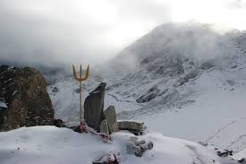

1. Roopkund Trek, Uttarakhand

Roopkund is a famous glacial lake in the state of Uttarakhand in India. This lake is famous due to more than five hundred skeletons of humans that are found at the edge of the lake. It is located in the Himalayas and rests at an altitude of nearly 4,800 meters. Roopkund is located in the Chamoli district of Garhwal. It is one of the best sites for Trekking in Garhwal. It is closer to hill stations like Nainital and Kathgodam. At a distance of 217 km from Nainital and 235 km from Kathgodam, Roopkund is one of the major adventure attractions for people in the country and those traveling from abroad. Roopkund, which is located in the lap of Trishul massif is also known as the ‘mystery lake’. You can find human skeletons at the bank of the lake, which are believed to belong to the Palaeolithic age. These are believed to be the skeletons of the heroes who had fought here in earlier times. Along with the skeletons of humans, you can also find the skeletal structure of horses and other animals. There are reports that these skeletons belong to the 12th century to the 15th century. It is believed by specialists that the death of many people in this region was a result of landslides, blizzards, or an epidemic. The human skeletons were re-discovered in 1942 by H K Madhwal, who was a Nanda Devi Game reserve ranger.  Later in 2004, a team of Indian scientists along with some Europeans visited the area to gain more information about the nature of the skeletons. , also known as the Mystery Lake, is famous for its skeletal remains visible at the bottom of the lake. This challenging trek offers breathtaking views of the Himalayas, including Nanda Devi and Trishul peaks. The trek passes through beautiful forests, meadows, and snow-covered terrain.
Highlights: Mystery Lake, alpine meadows, panoramic Himalayan views, diverse flora and fauna.
2. Hampta Pass Trek, Himachal Pradesh


The Hampta Pass trek offers a diverse landscape, from lush green valleys of Kullu to the barren terrain of Lahaul. This trek is known for its dramatic change in scenery and the beautiful crescent-shaped Chandratal Lake. At 14,000 feet Hampta Pass in Himachal Pradesh falls under those rare, dramatic pass crossings in the Himalayas. On one side is the lush green valley of Kullu — with forests, grasslands, and flowers blooming on the side of your trail. On the other is the almost arid, stark landscape of Lahaul, with barren mountains and almost no vegetation. Standing on the top of the pass, what’s ahead and behind are two different worlds. It changes in a matter of minutes. Simply put,the Hampta Pass is Himachal’s Valley of Flowers. The landscape is strikingly similar to that of Valley of Flowers – a green narrow valley protected by snow-covered mountains – but there’s a bonus here. When you get onto the other side of the Hampta Pass, you’ll be in awe looking at the stark contrast from what you just left behind. The landscape that stretches in front of you is Spiti Valley, known for its barren stretches, rugged terrain and forget-me-not blue skies. What makes the dramatic changes heightened, even more, is how thrilling the climb to Hampta Pass is. For trekkers, crossing the Hampta Pass (even without the scenery changes) is a great story of adventure. They will love the nervous excitement of climbing to the pass over many ledges, almost appearing to get to the pass, but never really sure until you get there.

 They will love the nervous
excitement of climbing to the pass over many ledges, almost appearing to get to the pass, but never really
sure until you get there.
They will love the nervous
excitement of climbing to the pass over many ledges, almost appearing to get to the pass, but never really
sure until you get there.
Highlights: Diverse landscapes, Chandratal Lake, beautiful campsites, rich biodiversity.
3. Valley of Flowers Trek, Uttarakhand

 The Valley of Flowers Trek is a popular and enchanting trekking location in the Garhwal Himalayas. It
offers stunning views of colourful flowers, green pastures, and the snow-capped Himalayas. Situated at
14,100 ft. above sea level, the Valley of Flowers is a UNESCO World Heritage Site. It is mainly known
for its gorgeous flowers in different colours and shapes. The trek is best experienced from June to
September when the Valley is fully blooming. Visitors can also spot rare species such as blue sheep and
red fox during the trek. The Valley is home to over 300 rare and endangered species of flowers, as well
as Himalayan animals like blue sheep, black bears, and snow leopards. The trek is not easy, with
moderate difficulty and long trekking days. The route includes a steep ascent to Hemkund Sahib,
challenging trekkers’ endurance. However, the breathtaking scenery and abundant flora and fauna make it
a must-visit destination for nature lovers and adventure enthusiasts. The Valley of Flowers trek is one
of India’s most renowned treks, and it became a UNESCO World Heritage Site in 2002. While it’s a
challenging trek, the enchanting beauty of the Valley makes it a top choice for trekkers seeking an
unforgettable experience in the Himalayas.
Get ready to explore the astonishing sights of green surroundings, followed by the Himalayas’ gleaming
snowy mountains. When it comes to the most fascinating and enthralling Valley in India, this trek is on
top because it perfectly displays the abundance of colourful flowers and green pastures. You can find
thousands of blue Primula blooming in this Valley, giving you a picture-perfect view. Primula is one of
the most gorgeous and lovely Himalayan flowers. The best time to visit this Valley in full bloom is
mid-July to mid-August. It would help if you trekked from Govind Ghat to reach the Valley of Flowers,
and on the route, you will also pass from Hemkund Sahib. This Valley is about 5km from Ghangaria. Trek
offers a natural walk into the quintessence of flora and fauna. Not only this, but you can also find
more than 300 rare and endangered species of flowers in this Valley. Some rare species include Primulas,
Calendulas Daisies, Orchids, and Poppies.
The Valley of Flowers Trek is a popular and enchanting trekking location in the Garhwal Himalayas. It
offers stunning views of colourful flowers, green pastures, and the snow-capped Himalayas. Situated at
14,100 ft. above sea level, the Valley of Flowers is a UNESCO World Heritage Site. It is mainly known
for its gorgeous flowers in different colours and shapes. The trek is best experienced from June to
September when the Valley is fully blooming. Visitors can also spot rare species such as blue sheep and
red fox during the trek. The Valley is home to over 300 rare and endangered species of flowers, as well
as Himalayan animals like blue sheep, black bears, and snow leopards. The trek is not easy, with
moderate difficulty and long trekking days. The route includes a steep ascent to Hemkund Sahib,
challenging trekkers’ endurance. However, the breathtaking scenery and abundant flora and fauna make it
a must-visit destination for nature lovers and adventure enthusiasts. The Valley of Flowers trek is one
of India’s most renowned treks, and it became a UNESCO World Heritage Site in 2002. While it’s a
challenging trek, the enchanting beauty of the Valley makes it a top choice for trekkers seeking an
unforgettable experience in the Himalayas.
Get ready to explore the astonishing sights of green surroundings, followed by the Himalayas’ gleaming
snowy mountains. When it comes to the most fascinating and enthralling Valley in India, this trek is on
top because it perfectly displays the abundance of colourful flowers and green pastures. You can find
thousands of blue Primula blooming in this Valley, giving you a picture-perfect view. Primula is one of
the most gorgeous and lovely Himalayan flowers. The best time to visit this Valley in full bloom is
mid-July to mid-August. It would help if you trekked from Govind Ghat to reach the Valley of Flowers,
and on the route, you will also pass from Hemkund Sahib. This Valley is about 5km from Ghangaria. Trek
offers a natural walk into the quintessence of flora and fauna. Not only this, but you can also find
more than 300 rare and endangered species of flowers in this Valley. Some rare species include Primulas,
Calendulas Daisies, Orchids, and Poppies.
Highlights: Colorful wildflowers, diverse flora, Hemkund Sahib, picturesque landscapes.
4. Goechala Trek, Sikkim
The biggest reason to do the Goechala trek is the grand views of the big mountains you see. You don’t
just see one summit — the Kanchenjunga — but 14 other big summits. That’s a lot for any trek —
especially as close to the eyes as on the Goechala trek. It is no wonder that trekkers consider Goechala
to be the closest to the big mountain treks of Nepal.
Before we dive into the details about the Goechala trek, here is a little backdrop of why Goechala is
well-known among trekkers all over the world:
While the trail to Goechala is old, it wasn’t always so famous. The change that occurred during the
Nepalese Civil War lasted from 1996 to 2006.
Disturbances in Nepal during this time shut the country to trekkers. Suddenly trekking to the highest
mountains of the world was out of bounds. It was a massive blow to the trekkers, who frantically started
looking for alternatives.
At that time, Goechala emerged as the closest solace. The trail promised a brilliant close-up of the
third highest mountain in the world and offered breathtaking views of the Singalila range from Dzongri
Top.
Sunrise on the Kanchenjunga Range
One of the biggest highlights of the Goechala trek is the sunrise scene on the Kanchenjunga range. Even
though trekkers are not allowed to the actual Goecha Pass, the view from ViewPoint 1 and Dzongri is
worth an arm and a leg!
Rhododendrons in April and May
The trail to Goechala is blessed with rhododendron forests. And come spring-summer months of April and
May, they burst to life with pink and red flowers! It’s an enormously pleasant walk through the
wooden-log trails of these jungles!
The Samiti Lake
 Samiti Lake is another big attraction on the Goechala trek. The view of the still waters, and the
reflection of Mt Pandim in the lake, especially in the early hours, is a visual treat.
Samiti Lake is another big attraction on the Goechala trek. The view of the still waters, and the
reflection of Mt Pandim in the lake, especially in the early hours, is a visual treat.
Highlights: Close views of Kanchenjunga, Samiti Lake, diverse Himalayan flora and fauna.
5. Markha Valley Trek, Ladakh
The Markha Valley trek is one of the most popular treks in Ladakh, offering a glimpse into the unique culture of the region. The trek passes through traditional Ladakhi villages, Buddhist monasteries, and high mountain passes. Markha is a stunning river valley in Hemis National Park. The trek through Markha Valley is very picturesque and full of adventure. The trek involves many river crossings, some waist-deep, along with taking you to a hight of 17,060ft while crossing the high pass of Kongmaru La. The trail offers some outstanding views of Mt Kang Yatse (21,300 ft). There are also incredible rocky canyons along the trail, as well as plenty of wildlife. The most charming bit of this trek however is the lovely villages of Markha Valley. The humble mud houses set amidst lush green fields are a spectacular sight in the middle of the barren mountains of Ladakh. Tibetan culture thrives in these villages, with traditional ornamented kitchens and Buddhist prayer flags, among other things Tibetan. The best part of it is that you can stay in such lovely homes throughout the trek. There are village homestays all throughout the trail which make Markha Valley one of the few tea-house treks in India. This makes the trek a very rewarding experience, without the logistics involved in camping.
Highlights: Hemis National Park, ancient monasteries, traditional Ladakhi culture, diverse landscapes.